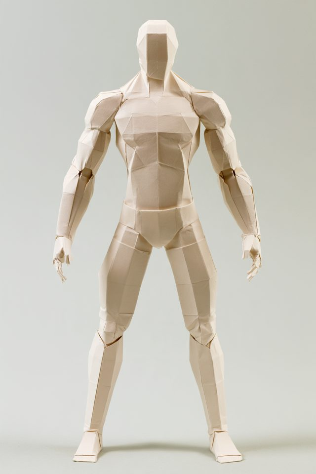
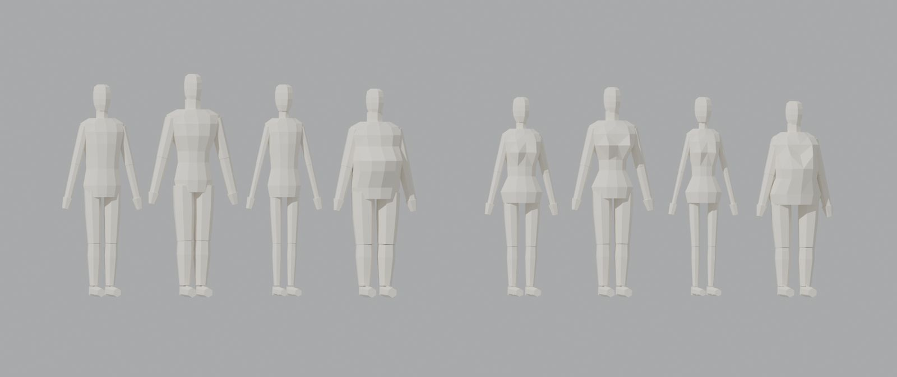
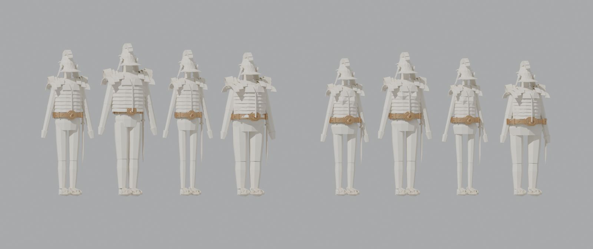

Man #1

The picture: Midjourney, toned man, take 1
The model: 1.85 m, about 1,200 triangles, round 2, re-measured from the picture
The toned pair
Man, toned (from the body slider recipe)
Woman, toned. A heroic version is next, from new Midjourney pictures
Eight body types

One recipe with sliders: man, then woman, each average, heroic, skinny, fat
Dressed in the Roman kit

The six Roman parts fitted to every body automatically